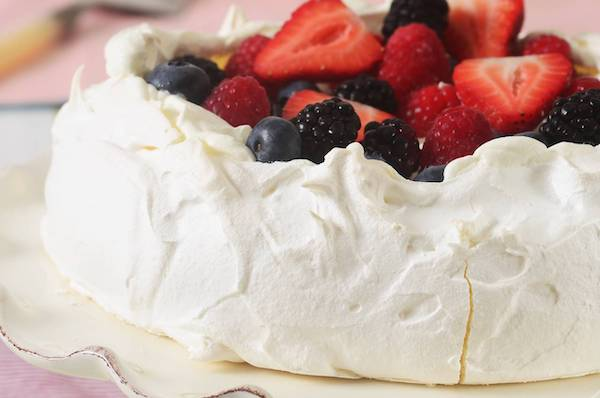

pavlova
pavlova is legitimately one of the best things you will ever put in your mouth--if you're lucky enough to get the chance. pavlova consistently exceeds expectations in ALL areas: texture, taste, and presentation. pavlova may look like a regular meringue, but its very different. it has a harder, sugary shell on the outside, but once you bite it, you'll be delighted to find a soft, spongey, also sugary inside. pavlova tastes amazing if you make it correctly (which is a bit difficult to do), and toppings like organic whipped cream, strawberries, and other berries always make it better. and of course, decorating pavlova with these various toppings is always fun.
as you can see, pavlova reigns supreme in the dessert world, and always tastes like heaven if made correctly. because of the texture, taste, and presentation factor of pavlova, my rating is...
100000000/10
............................................................................................................................................................................................................................
if you would like to challenge yourself and work hard to taste absolute heaven inside your mouth, here is a homemade pavlova recipe:
Ingredients
- 6 X 60g (large) egg whites at room temperature
- Pinch of cream of tartar
- 2 cups castor sugar (fine granulated sugar, not icing/powdered/confectioners)
- 2 teaspoons white vinegar
- 1 teaspoon vanilla essence
- 1 tablespoon cornstarch
Method
- Heat oven to 150 degrees C (300 degrees F) or, if fan forced oven 130 degrees C (265 degrees F).
- Line baking tray with non-stick baking paper (not wax paper!)
- Whisk egg whites and cream of tartar in a clean dry bowl using electric mixer for 3-4 minutess until soft peaks form.
- Add sugar one spoonful at a time, whisking well after each addition until meringue is thick and glossy (about 10 minutes).
- Add vinegar, vanilla and cornstarch and fold through using spatula.
- Spoon onto paper in circle roughly 23cm (9in) diameter.
- Bake for 1 hour or until crisp.
- Turn off oven and allow to cool in oven for 1-2 hours with door slightly open. (don't open door fully!)
- Turn upside down onto plate.Whip cream and decorate with berries (strawberries, raspberries, blueberries, blackberries).
- Eat and enjoy!
back to home